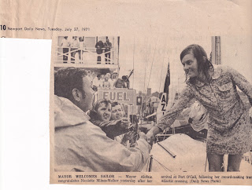
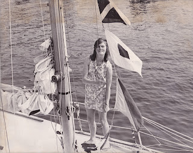
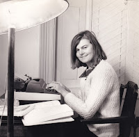
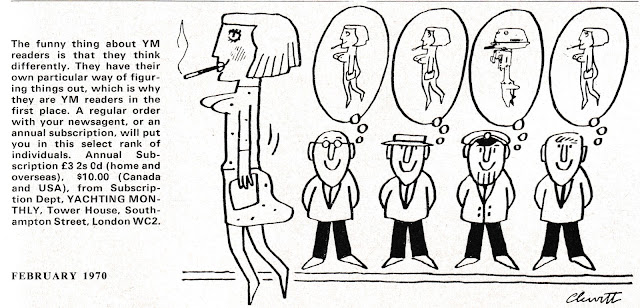
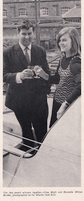
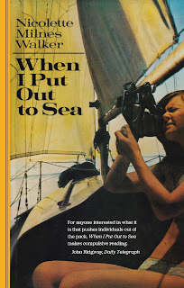

When Nicolette Milnes Walker (28) arrived in Newport Rhode Island on July 26, 1971, she was greeted with foghorns, a nautical escort, flashing lights. There was even a clap of thunder! The Mayor came out in his motorboat to meet her and offered her the Freedom of the City; her parents were waiting, the Navy was there – and so was the Press. As she stepped onto the pontoon in her freshly-donned mini-dress, there were cameras and a microphone as well as hugs and greetings. ‘I was surrounded by friendly and enthusiastic people, all asking questions. I replied as best I could, which was not very well (under the circumstances) for I was too excited to think clearly. […]
 |
| Newport Daily News 27.7.71 |
{kind=link}
Nicolette had just sailed across the Atlantic from Milford Haven, alone and without stopping in her 30’ sloop, Aziz. This was a female first, as she had planned it to be. When asked why, she said it was ‘for fun’. The celebrations were fun as well. ‘That evening I was feeling so fit and happy I went to two parties and then to some one’s house for steak and salad. Delicious. When we arrived back at the hotel at about half past midnight, there was a television crew waiting […] Friends who saw the interview told me I had already picked up an American accent. If I had it was because I was enjoying American hospitality so much. […]'
Her period of celebrity had just begun. 'Next day was hectic. I spent the morning running between the two telephones in my room, answering questions, posing for photographers. I was happy to talk to anyone and everyone, press and well-wishers. I recorded several television interviews with the BBC, which was fun, although after a time I found that I was saying the same thing over again.’
 |
| On board Aziz (collection Nicolette Coward) |
{kind=link}
Yet Nicolette wasn't just a ditsy little girl with bare legs and a big smile - 'a teenage imposter' as she guessed some people saw her. She was a research psychologist, most recently at UWIST (University of Wales Institute of Science and Technology) and her motivation was both ambitious and cerebral. She liked ‘the art of designing experiments’ and was fascinated by ideas and what she described as 'personal truth' but had come to believe that the world of the academic scientist was not for her. Instead, she had set herself this challenge to investigate her own reactions to stress and solitude. ‘I’d read the books of single-handed sailors and was interested to find out what it really is like to be alone at sea depending on nobody but yourself.’
As well as writing up her log and keeping a diary during the 4000-mile crossing she spoke into a tape recorder every day. Later, when she was writing her account of the voyage, this two-fold approach helped her reflect on the differences between what she claimed to have felt and how it had been actually. On departure for instance: ‘Apart from the sickness I thought I was feeling quite happy and wrote in my diary “I am feeling remarkably calm after this morning when I had a little cry and wished I wasn’t going. But when I recorded on tape an account of the departure I was quite overcome by emotion. The tape is full of long pauses and choked sentences.”’
Nicolette’s book When I Put Out to Sea is her subsequent account of her adventure; her report on her experiment. It was also a necessary means of defraying the cost. She hadn’t been sponsored (one guesses this wouldn’t have been forthcoming in the context of the time) but her trip had been enabled by a loan from her father, by the practical advice of friends and the professional skills of the small sailing community in Dale in Pembrokeshire. She'd studied navigation at the Little Ship Club and flew their burgee, along with that of the unpretentious Dale Yacht Club. She was fortunate that Bruce Coward, the man who arranged the book contract and who she later married, was a knowledgeable book trade professional. Writing became another ‘journey of discovery’ as well as a financial necessity.
 |
| writing with Bruce (collection Nicolette Coward) |
{kind=link}
Nicolette was eager for achievement -- ‘How many of the tens of millions of women on this earth would even consider trying this journey?’ She wanted to be the first woman to make the solo Atlantic crossing and understood that her best chance would be to go soon, at a time of her choice, in a yacht she could afford and of a size she could handle, rather than wait for the pressures of the next OSTAR (Observer Single Handed TransAtlantic Race) due to run in the following year (1972). Going ‘for fun’ also allowed her to take the slightly easier and longer Azores route rather the more competitive, colder, more dangerous Northern route. Her competition was with herself and the sea. That was enough.
The journalists waiting at Newport, and those who greeted
her on her return to the UK via the QEII, were not noticeably interested in the
design of her personal experiment or the intellectual insights she had achieved. They probably didn’t take much time looking at her small production
yacht or the Hasler-Gibbs servo pendulum system that had helped her through so
many miles. They were keener on her ‘prettiness’, her small stature, her
vivacity, her youthfulness and lack of previous sailing experience, her
handicaps (such as short-sightedness and inability to swim). They also liked
the fact that she’d spent many solitary days sailing in the nude. The fact that
many male solo sailors (such as Edward Allcard, first British yachtsman to cross the Atlantic
alone and non-stop in 1949) habitually strip down to the buff, didn’t offer the
same frisson.
Nicolette took this in her stride: Clare Francis, the next
woman to be subjected to equivalent media attention, became quietly angry at the
endless bikini poses she was asked to undertake as she prepared for the OSTAR in 1976: ‘they don’t ask Harvey Smith
to pose in his underpants’. ‘What has this to do with crossing the Atlantic?’
growled her partner, Jacques Redon. Nevertheless, trained ballerina Clare cared that she should be seen as
feminine and not as some Soviet weight-lifter nor as a ‘women’s libber, out to beat the men’. Though she did want to beat as many fellow-racers as she could, being determined ‘not to let the side down’ – ie the other women who had expressed
enthusiastic support when Francis and Eve Bonham had been the first to
compete in an all-female partnership in the 1974 Round Britain Race, coming 22 overall in a field of 61 starters - almost all male - and 3rd on handicap.
1970s gender issues were as complex and unpredictable as the Atlantic itself. This was a decade of debate and legislative change leading, for women, to the passing of the Sex Discrimination Act in 1975. Although this was an essential and overdue step in the outlawing of injustice, it also bred resentment and defensiveness. Those of us old enough can remember the derision aroused by the caricature image of ‘women’s libbers’ and that’s certainly not absent from the pages of the Yachting Press. As I looked through old copies of Yachting Monthly to see how Nicolette’s Atlantic crossing was reported 'in the trade', I found nothing. No mention at all. As the national media enjoyed a feeding frenzy, the yachting press (as far as I have discovered) looked the other way.
I did find a selection of eye-wateringly sexist comments and assumptions, some of which I immediately sent to my friend Katy Stickland (who becomes editor of Practical Boat Owner today, Jan 9th 2023), knowing that she and Theo Stocker, the current Yachting Monthly editor, would find them as astounding as I do - now. Here's a YM cartoon from February 1970, for instance -- apparently reflecting the character of its readership.
 |
{kind=link}
Well yes - ! The other technique was simply to write women out of the script. The only mention of Nicolette which I discovered in the magazine was a photo of her being awarded Yachtswoman of the Year, alongside Chay Blyth. This seemed pretty good considering that Blyth had just sailed British Steel round the world, non-stop and alone, against the prevailing winds and currents. The page from the Boat Show catalogue seemed generous; '1971 will also be remembered for a shorter but hardly less remarkable voyage than Blyth's. It was the year in which seven stone, 28-year-old Nicolette Milnes Walker became the first woman to sail the Atlantic alone and non-stop.'
 |
| page from Boat Show catalogue (collection Nicolette Coward) |
{kind=link}
This did not happen. Nicolette has not been remembered, even in the records of the Yachting Journalists Association which administers the award. Later in the article it becomes clear that 'solo yachtgirl Nicolette' would be getting 'a special, once-only trophy as Yachtswoman of 1971'. Somehow even this limited honour didn't make it to the records. Looking today on the YOTY list there is no mention of her. The Yachtsman of the Year award was instituted in 1955 by Sir Max Aitken but no women are listed as winners until Tracy Edwards in 1989, honoured for skippering Maiden round the world with an all female crew. This overlooks some notable female sailors. In 1978, for instance, no award was made - yet that was the year that Clare Francis was the first female skipper to complete the Whitbread successfully, though her crew was mixed. 1978 was also the year Naomi James became the first woman to sail solo round the world via Cape Horn.
There were significant achievements. Although Nicolette's book may have slipped from the shelves and her name from the records, we can change this. When I Put Out to Sea will be re-published on 15.3.2023, celebrating her 80th birthday and Clifford Webb, current chairman of the Yachting Journalists Association, has responded quickly and helpfully to my message pointing to her omission from their published record. Will they change it? I hope so. Will anyone care? I think they should.
 |
| Forthcoming edition 15.3.2023 Available from the Golden Duck site and through bookshops |
{kind=link}